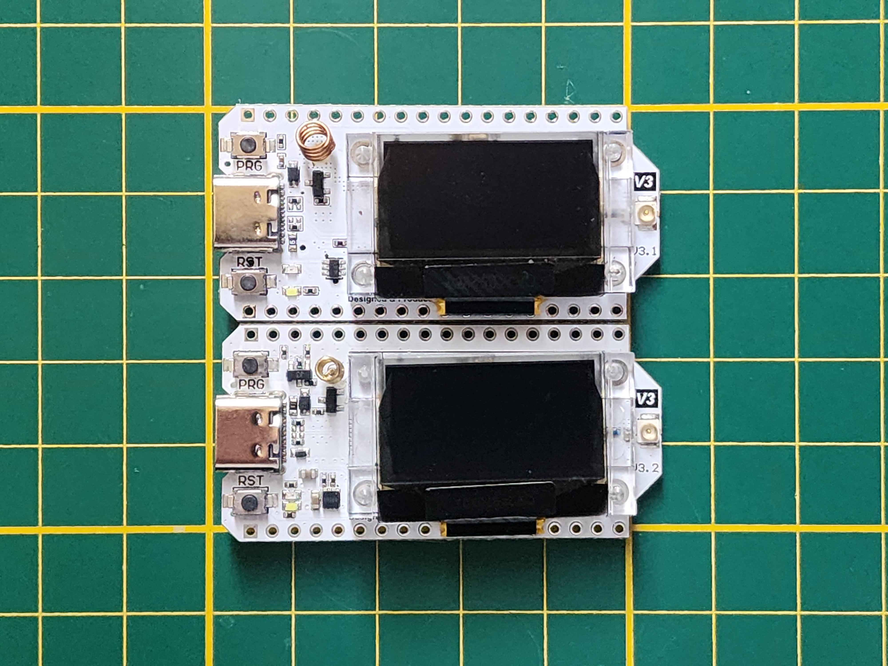

How to get started
An easy beginners guide to the welsh mesh
Infomation
This website is very beta, Many pages are broken or they just dont exist. Please be paitent, I am only one person. Thanks!
1. Recommended Hardware
To join you will need a small, cheap, Long Range radio that will join into the mesh we recommend the following starter devices:
| Device | Use Case | Approx Price |
|---|---|---|
| Heltec V3 | Best starter node (USB powered) | £20 |
| RAK WisBlock | Best for Solar/Outdoor nodes | £40 |
| T-Beam | Great for GPS tracking | £35 |
2. Assemble your device
Once you receive your device, you will probably need to assemble it, If you don't continue to Part 3
Each device will have its own way to assemble it, You may need to search up your specific board, below are some recommended tutorials
Note
Some devices may need specific assembly instructions, these are generic tutorials pointed to the most popular devices
| Video | About | From |
|---|---|---|
| Heltec V3 | A video to help assemble the Heltec V3 | Youtube |
| LilyGo T-Echo | A search to help find setups for the T-Echo | |
| RAK WisBlock | A search to help setup the RAK WisBlock |
Warning
Do not ever power on your device without the antenna, doing so can cause the radio chip to overheat and fry itself
3. Flash your device
Now, Once you have everything assembled you need to flash it with Meshtastic Firmware
Go to Meshtastic FlasherVisit the Meshtastic Web Flasher, then follow the numbered instructions below,
- Choose your Device
- Choose your Firmware (Stable / Beta Recommended)
- Click Flash, Continue, Full Erase and Install
- Select your device
- Wait...
- Once the text says "Leaving..." you are done!
You are now ready to connect to your new node and join the mesh!